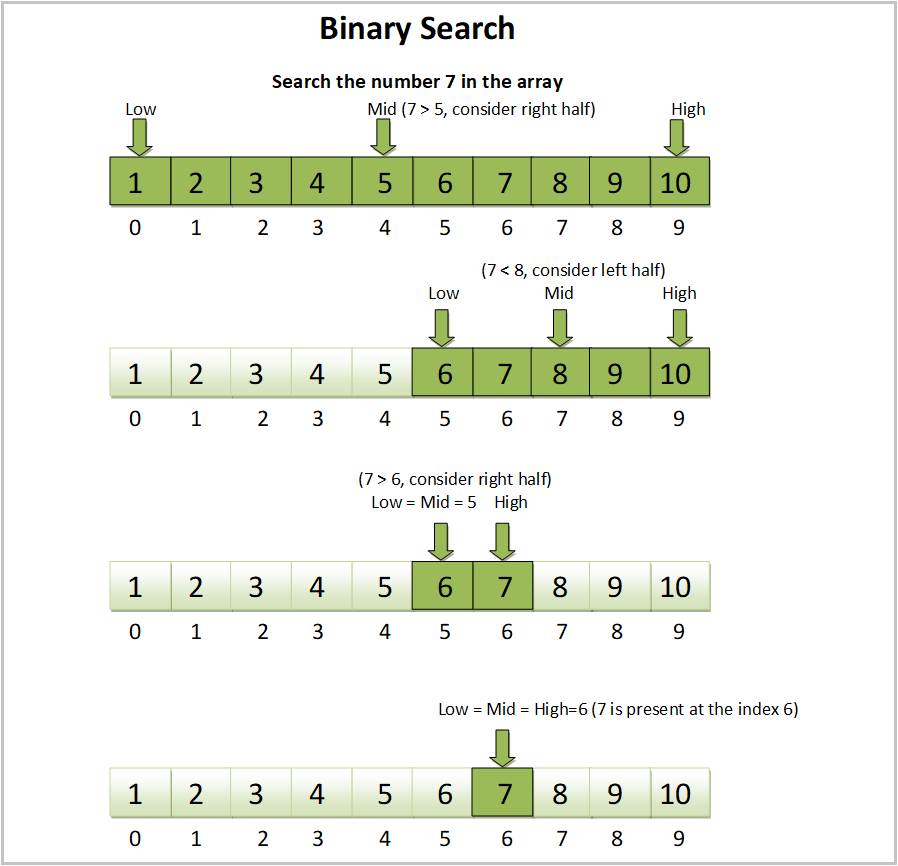

Binary Search
See quick sort first as the array you are searching needs to be sorted.

import os, pdb, math
def b_s_iterative(arr, elem):
start = 0
end = len(arr) - 1
mid = math.floor((start + end)/2)
iter_count = 0
while (arr[mid] != elem and start <= end):
iter_count += 1; print(iter_count)
print("{}-{}-{}".format(start, mid, end))
# pdb.set_trace()
if elem < arr[mid]:
end = mid - 1
else:
start = mid + 1
mid = math.floor((start + end)/2)
return mid if arr[mid] == elem else -1, iter_count
Below is some practice evaluation code I was using. What I was doing was making Big O notation sample data to test how many iterations it takes to search different size data. First I do orders of 10 and then orders of 2. Technically Big O notation uses log with base 2, so the second set of data is more useful for plotting; though they both work. We should see O(log(n)) on the y-axis and n on the x-axis showing that the time complexity is log(n) iterations to search an array given n elements.
big_O = [] # 10s
for i in [1,10,100,1000,10000,100000,1000000,10000000]:
# pdb.set_trace()
if i == 0:
big_O.append((0, 1))
else:
array = range(i)
index, count = b_s_iterative(array, 6)
# pdb.set_trace()
big_O.append((i, count))
big_O = [] # 2s
for i in [2,4,8,16,32,64,128,256,512,1024,2048,4096,8192,16384,32768,65536,131072,262144,524288,1048576]:
# pdb.set_trace()
if i == 0:
big_O.append((0, 1))
else:
array = range(i)
index, count = b_s_iterative(array, 6)
# pdb.set_trace()
big_O.append((i, count))